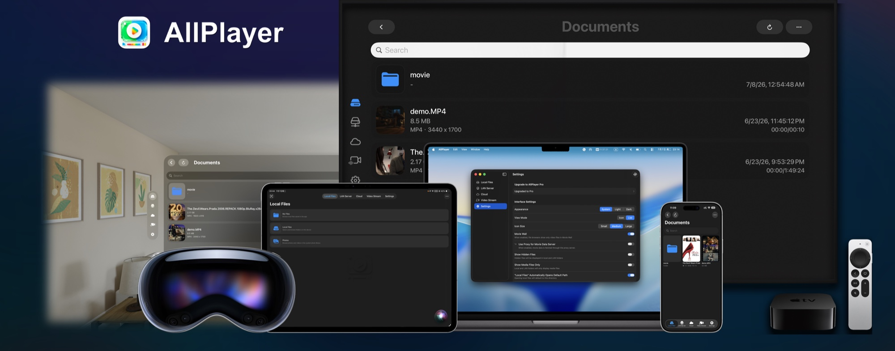

On device
Files, Photos, and disc images
Native across Apple platforms
Bring local files, LAN and NAS libraries, media servers, cloud drives, and online streams into one personal media hub built for iPhone, iPad, Mac, Apple TV, and Apple Vision Pro.
Local playback stays available. Try the complete Pro workflow free for 7 days.

Files, Photos, and disc images
NAS and media servers
Ten storage providers
HLS, m3u8, and shared links
Everything in reach
AllPlayer follows the way personal media actually lives: across devices, folders, servers, cloud accounts, and stream lists.
Move naturally between local files, LAN servers, cloud storage, and video streams without rebuilding your library around one service.
Play common containers such as MP4, MOV, MKV, AVI, FLV, WMV, TS, M4V, RMVB, and RM. Browse Photos and open supported ISO, Blu-ray, and DVD Video content.
Browse folders and play directly from shared storage or a home media server.
Connect the services you already use, browse remote folders, and start playback without manually moving every file first.
Add HLS, m3u8, live, and web video links. Search and sort your list, import or export configurations, detect supported shared media, select available quality, cache a stream locally, or watch two streams at once.
Step into cinema environments, resize and curve the screen, adjust distance and height, switch 2D or stereo layouts, and keep subtitles and playback controls within reach.
Designed for a personal library
AllPlayer can sync LAN server, cloud account, and video stream configurations through iCloud. Playback history helps you resume, while local file transfer tools make it easier to bring media onto your device.
Add the folders, servers, accounts, or stream lists you use.
Search, sort, rename, move, and browse in list, grid, or movie-wall views.
Choose the decoder and viewing mode that fit the source and screen.
AllPlayer
Built by an independent developer for people who keep, organize, and enjoy their own media.
Feature availability can vary by device, operating system, media source, and network conditions. Some advanced features require AllPlayer Pro.
为 Apple 全平台而生
把本机文件、局域网与 NAS、家庭媒体服务器、主流云盘和在线视频流，带进同一个个人媒体中心；覆盖 iPhone、iPad、Mac、Apple TV 和 Apple Vision Pro。
本地基础播放可持续使用，完整 Pro 功能可免费体验 7 天。
文件、照片与光盘镜像
NAS 与家庭媒体服务器
连接 10 种云端存储
HLS、m3u8 与分享链接
所有内容，触手可及
AllPlayer 按照个人媒体真实存在的方式来组织内容：它们可能在不同设备、文件夹、服务器、云盘账号或视频流列表中。
在本机文件、局域网服务器、云端存储和在线视频流之间自然切换，不必为了一个播放器重新整理全部媒体。
播放 MP4、MOV、MKV、AVI、FLV、WMV、TS、M4V、RMVB、RM 等常见格式；浏览系统照片图库，并打开受支持的 ISO、Blu-ray 与 DVD Video 内容。
浏览共享文件夹，或从家庭媒体服务器直接开始播放。
连接正在使用的云端服务，浏览远程目录并开始播放，无需先手动搬运每一个文件。
添加 HLS、m3u8、直播流或网页视频链接；搜索与排序列表、导入导出配置、识别支持的分享媒体、切换可用清晰度、缓存直播流到本地，或同时观看两个视频流。
进入不同影院环境，调整屏幕大小、曲率、距离与高度，在 2D 和立体布局之间切换，同时让字幕和播放控制始终触手可及。
为个人媒体库设计
AllPlayer 可通过 iCloud 同步局域网服务器、云端账号和视频流配置；播放历史帮助你从上次进度继续，本机文件传输工具则让导入媒体更轻松。
添加常用文件夹、服务器、云端账号或视频流列表。
搜索、排序、重命名和移动，并用列表、网格或电影墙浏览。
按媒体来源和屏幕选择合适的解码器与观看模式。
AllPlayer
由独立开发者打造，献给认真收藏、整理与享受自己媒体内容的人。
具体功能可能因设备、系统版本、媒体来源和网络条件而异；部分高级功能需要 AllPlayer Pro。